Vanderbilt · Learning Series · ATD facilitator guide · print edition
Guardrails & Responsible Use, the facilitator guide

Run of show
| Screen | Full (min) | Core (min) |
|---|---|---|
| Welcome / QR | 3 | 2 |
| Objectives | 2 | 1 |
| The Chancellor's charge | 3 | <1 |
| Agenda | 1 | skip |
| 01 · Why written rules | 8 | 5 |
| Manifesto | 1 | skip |
| 02 · Line one: what goes in | 12 | 9 |
| 03 · Line two: the check | 11 | 8 |
| 04 · Line three: disclosure | 10 | 6 |
| 05 · Line four: ownership + the Lab | 14 | 10 |
| 06 · Write your Four Lines | 12 | 8 |
| Recap quiz | 4 | 4 |
| Capstone · My Four Lines card | 6 | 6 |
| Glossary | 1 | skip |
| Closing · commitment | 5 | 1 |
| Total | 93 | 60 |
Audience
All Vanderbilt staff who use AI for university work, from front-office teams to unit leads; anyone whose team touches student records, internal documents, or the university's public voice. 8 to 24 works best (the classification and disclosure drills run in pairs); scales larger with room votes. Prerequisite: Start Smarter, which taught the traffic light this course assumes and extends.
Room setup
Projector plus presenter device; learners on their own devices via the Welcome-slide QR; movable seating for pairs. Virtual: breakouts of 2 for the classification swap and the disclosure read-alouds. Set the norm in the first minute: tools and situations, never people's names, and nothing typed is saved or sent. Have the traffic light drawn or printed where the room can see it all session; every section points back at it.
Materials
- Projector or large display and the facilitator link open (this edition)
- Facilitator laptop with arrow keys or clicker; all notifications off
- Learner devices (BYOD) joining via the welcome-slide QR
- A few printed cheat sheets (cheatsheet.html) for anyone without a device
- Printed Four Lines agreements (worksheet.html) as the no-device and projector-failure fallback
- A printed or drawn traffic light poster, visible from every seat
- Whiteboard or flip chart with markers for the hard-case arguments and disclosure rewrites
- The current approved-tool list confirmed with IT the week before (today: ChatGPT EDU, Amplify, Copilot)
A week before
- Read this guide end to end, then run BOTH editions start to finish, doing every exercise, including drafting the Four Lines for a team you actually belong to. You will be asked what your own line one says; a real answer plays far better than a hypothetical.
- Confirm the approved-tool list with IT so you never guess from the front of the room. If the list has changed, the course copy needs updating before you teach, not during.
- Send the pre-work invite (template on this page) with the calendar invite: come knowing your team's two or three most-shipped outputs and the data they touch, held privately.
- Decide your path now: Full (90-minute slot) or Core (60). Mark which pair drills you keep versus run solo.
- Skim the current Stanford AI Index chapter on responsible AI so the incident numbers are fresh; the game's reveals carry the citations, but you should be able to say 'the Index' with a straight face.
The day before
- Test the projector with the facilitator link; confirm the notes rail is readable from where you'll stand.
- Scan the welcome QR from the back of the room with your own phone; it must land on the learner edition.
- Run one full round of the Guardrails Lab and one trainer so you can drive them without looking.
- Print 5 to 10 cheat sheets and Four Lines agreements, and put up the traffic light poster.
- Re-read the tough-questions bank; say the 'am I in trouble for what I already pasted?' response out loud once. That question is coming.
30 minutes before
- Welcome slide up as people arrive; it does the enrolling for you.
- Close every other tab and app; silence the machine.
- Test arrow-key navigation and one interaction (run a Guess the Number round, open the lab).
- Write 'TOOLS AND SITUATIONS, NEVER NAMES' where the room can see it all session.
- Check the traffic light poster is straight and visible; you will point at it at least six times.
When things go sideways
If Projector or the site fails mid-session: Teach from the whiteboard: the traffic light, the four lines, and the misled test all draw in seconds. The classification and disclosure drills never needed a screen; read the trainer cases aloud from the printed cheat sheet and have the room vote by hands. The builder and capstone move to the printed agreement.
If Learner devices can't join (wifi or filters): Run facilitator-only: the trainers play well on the projector with the room voting A/B/C by hands; the private builder and capstone move to paper. You lose typing, not learning.
If You're 10+ minutes behind by the Guardrails Lab (05): Declare the Core path silently: pair drills become solo passes, debriefs shrink to one voice, and the closing tightens to the fist-to-five plus commitment round. Never cut the lab, the builder, or the capstone; they carry the session's practice objectives.
If Someone names a colleague or starts prosecuting a specific person's AI use: Protect the norm warmly: 'Hold that. Tools and situations, never names. The lines work on situations, not people.' If it keeps happening, there is usually a real conflict underneath; move the person to a private follow-up and keep the room on situations.
If Someone discloses a possible real incident, like student data already pasted into a personal tool: This outranks the agenda. Thank them for saying it out loud, do not adjudicate from the front of the room, and route it: their manager and the appropriate policy owner, today, framed as cleanup rather than punishment. Then use the moment, without the details, to teach why early surfacing is the cheap outcome the written lines exist to produce.
If The room is skeptical: 'this is compliance theater, nobody will follow a page': Agree with the premise and flip it: pages nobody follows are announced pages. Point at the working agreement standard: written WITH the team, findable, revisited. Then ask the skeptic what their team's current rule is; the honest answer is usually 'there isn't one,' which makes the case better than you can.
If The room is the opposite: enthusiasts who want AI in everything today: Aim the enthusiasm at the lab: 'Great, you're writing the lines for the rollout.' Enthusiast teams fail through unread output and undisclosed use, so let the lab's weak tier and the ownership section do the sobering. The message that lands: guardrails are what let you go fast without becoming the cautionary tale.
If Someone asks about a tool not on the approved list, or claims the list is wrong: Never adjudicate a specific tool live. The move is the agreement's own rule: the page points at IT's list, and questions about the list go to IT. Park the tool question, promise the route, and use it as a live example of 'unclear cases route, never improvise.'
Tough questions, ready answers
Q: Am I in trouble for what I already pasted into a personal AI account?
The honest answer: this session is not an audit, and the goal is better decisions from today forward. If something specific is weighing on you, especially anything about students or colleagues, the right move is to tell your manager or the policy owner so it can be assessed calmly; early surfacing is consistently the cheap outcome, and hiding it is how small things become incidents. The written lines exist precisely so nobody has to make these calls alone under deadline again.
Q: Why does a rec letter or student essay matter? I'm the one asking for the help, and I have good intentions.
Because the data is about someone else, and they never agreed to it entering a tool whose data handling you cannot see. FERPA does not have a good-intentions exemption, and neither does the person the letter describes. The workaround is usually easy: strip the identifying details and ask for structure help, or use an approved tool for the yellow parts. What never works is deciding on their behalf that the risk is fine.
Q: Doesn't disclosure make us look lazy, like we didn't do the work?
The evidence runs the other way: readers punish discovered concealment far harder than disclosed assistance. A plain line, drafted with AI assistance and reviewed by the team, reads as a process statement, the same register as 'photo by' credits. What reads as lazy is unread AI output, and that is a line-two failure, not a disclosure problem. If a piece would embarrass you when disclosed, the piece needs more human work before it ships.
Q: Half my team already uses AI quietly. Won't writing rules just drive it further underground?
Unwritten rules are what drove it underground; people hide what they cannot predict the reaction to. A written page with reasonable lines does the opposite: it tells people what is safe to say out loud, and teams that draft the page together usually surface the quiet use in the drafting meeting itself. The one thing that does drive it underground is treating the first honest disclosure as a disciplinary event, which is why the agreement frames routing and cleanup, never punishment.
Q: Who enforces this? A team page has no teeth.
Line four is the teeth. When every output has a named owner who answers for it, the other lines get enforced by the person with the most at stake, which beats any compliance mechanism a one-page agreement could invent. And the page has a second kind of teeth: when something goes wrong, the difference between 'we had a written line and someone crossed it' and 'we had no rule at all' is enormous, for the team and for the person.
Q: This will all change in six months. Why write rules for tools that keep moving?
The four lines are deliberately tool-agnostic. What goes in, who verifies, when we disclose, who owns it: those questions outlive any model release, and the quarterly revisit is how the answers track the tools. Notice the page also points at IT's approved list rather than copying it, for exactly this reason. Teams that wait for the tools to settle are choosing unwritten rules during the fastest-moving period, which is backwards.
Q: What if my team's lines conflict with another team's lines?
For work inside your team, your page governs your team. For shared outputs, the stricter line wins while the two owners talk, which is itself a route-not-improvise case: raise it, settle it, and both pages gain a line. And no team's page can loosen university policy; the lines add local clarity on top of FERPA, IT's tool list, and the rest, never subtract from them.
Copy-paste templates
Pre-work invite (paste into the calendar invite)
Subject: Before our AI Guardrails session. One thing to bring: a rough list of the two or three things your team ships most often (a newsletter, an FAQ, reports, email replies) and the kinds of data they touch, held privately. You will never be asked to name people; every exercise runs on tools and situations, and everything you type stays on your screen. If you took Start Smarter, dust off the traffic light; we build directly on it. That's it, no reading, no tools to install.
7-day pulse (send one week after)
Subject: One week later, did the Four Lines conversation happen? Three quick lines, reply whenever: 1) Did you have the team conversation from your card? 2) Where does the page live now, so a new hire could find it? 3) Which hard case surprised the team? Replies come to me only. Not yet? The card still works; this note is your nudge.
30-day re-poll (send a month after)
Subject: Thirty days of the Four Lines. Two questions, same scale as the room: 1) Fist to five, how confident are you now making the daily calls: what goes in, who checks, when to disclose? 2) Is the page still findable, and has anyone pointed at it during a real decision? Reply with a number and a line. The before-and-after pair is how we know this session did more than feel good.
After the session
Seven days out, send the pulse: 'Did the Four Lines conversation happen? Where does the page live? Which hard case surprised the team?' At 30 days, send the re-poll: the same fist-to-five confidence question from the close, plus 'is the page findable today, and has anyone pointed at it during a real decision?' The count of team agreements actually drafted and given a home is the program's headline Level 3 metric.
Welcome / QR Full 3 min · Core 2
Get every learner into the experience on their own device and set the norm that makes real-use material safe: tools and situations, never names, and nothing typed leaves the screen.
Say
“Welcome. Point your camera at that code before we start. Today is the session where responsible AI use stops being a poster and becomes one page your team actually wrote. We'll work on how your team really uses AI, including the quiet uses, so one ground rule for the next ninety minutes: tools and situations, never people's names. And everything you type today stays on your screen; nothing is saved or sent anywhere.”
Do
- Have this slide projected as people arrive.
- Point at the QR and get phones up before you say anything else.
- Set the norm explicitly and early: tools and situations, never people's names; typed exercises stay on their screens.
- Confirm by show of hands that most of the room has the site open before advancing.
Ask
“Quick calibration, shout it out: how many of you used AI for actual work in the last week? And how many of your teams have a written rule about it that you could find right now?”
Expect:
- Nearly every hand up on the first question
- Almost every hand down on the second
- Some nervous laughter at the gap
Respond: Name the gap warmly: 'That gap in this room is the same gap in the global data, and closing it takes one page and one meeting. Both are today's deliverables.'
Validate: 80%+ of the room has the deck open on a device; the room can repeat the 'tools and situations, never names' norm back to you.
Watch for: Anyone bracing for either an AI compliance lecture or an AI cheerleading session. The frame that relaxes both: today is a team-agreement workshop that happens to be about AI, and it ends with a page, not a policy binder.
Transition: “Here's exactly what you'll walk out able to do.”
Core path: Core: one scan prompt, the norm stated once, move on.
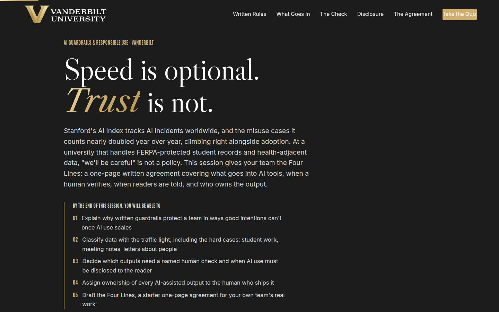
Objectives Full 2 min · Core 1
Set the contract: five capabilities, ending in a drafted starter agreement and a dated team conversation.
Say
“Five things by the end. You'll know why written guardrails protect a team in ways good intentions can't. You'll classify data with the traffic light, including the hard cases that trip smart people. You'll size the human check to the blast radius, and you'll have one test that settles disclosure. You'll put a name on every output. And it lands in one artifact: a starter Four Lines agreement for your actual team, with a date on the conversation that makes it real.”
Do
- Read the five objectives briskly, in plain language.
- Land on the last one: this session ends with a REAL draft of the Four Lines for your own team.
- Name the sources once for credibility: Stanford's AI Index for the incident numbers, and the Four Lines as the method.
Validate: Learners can say what the capstone will be (a starter Four Lines draft and a dated team conversation).
Watch for: Legal questions arriving early ('is this the official policy?'). Park them: this is a team working agreement that sits under university policy and points to it; the tough-questions bank has the full answer.
Transition: “One page before the plan: why the university itself needs your team to write these lines.”
Core path: Core: objectives 1 and 5 out loud; the rest on screen.
The Chancellor's charge Full 3 min · Core <1
Connect the course to the institutional vision: the university's dare to grow is what makes written AI guardrails an operations capability rather than compliance paperwork.
Say
“Before the plan, the why behind the why. Chancellor Diermeier's vision is one sentence with no hedge in it: Vanderbilt will define the great university of the 21st century, and be it. The how is uncommon speed, agility, and scale, and here is what that means at your desk: a university moving that fast while holding FERPA-protected records cannot run on 'we'll be careful.' Speed without written lines is how incidents happen, and incidents spend the reputation the whole vision runs on. Our motto is the dare, Crescere aude, dare to grow. The Four Lines you write today are what let your team take that dare safely.”
Do
- Read the vision sentence off the slide, slowly; it carries the page.
- Walk the three focus cards, landing on the 'At your desk' line in each.
- Point at the flywheel card: incidents spend reputation, and written lines protect it.
- Keep it under three minutes; this page frames the session, and the sections do the teaching.
Validate: The room can connect the vision to the course in one line: the faster the university moves, the more the written lines matter.
Watch for: Eye-rolls at strategy language. Ground it fast: the flywheel's inputs are decided at desks like theirs, one shipped output at a time.
Transition: “Six steps, one page. Here's the arc.”
Core path: Core: under a minute. Read the vision sentence, gesture at the three focus cards, move on.
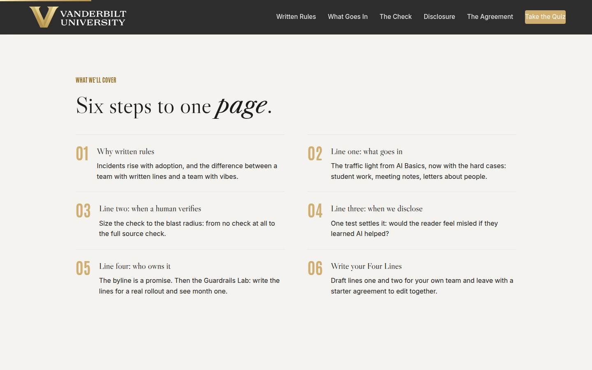
Agenda Full 1 min · Core skip
Show the arc once so learners can place each line as it arrives: evidence, then the four lines in order, then the draft.
Say
“The arc is simple: first the evidence for why written beats careful. Then the four lines, one at a time: what goes in, when a human verifies, when we disclose, who owns it. Then you draft yours, and the capstone puts a date on the team conversation.”
Do
- Walk the six items in one breath each.
- Point out the shape: the case for writing things down (01), then one section per line (02 through 05), then drafting yours (06).
Validate: None needed; this is orientation.
Watch for: Don't teach here; every line has its own slide.
Transition: “Start with the evidence, because some of you think this is overblown and some of you think it's terrifying, and the data disagrees with both.”
Core path: Core: skip entirely; the deck's structure carries it.
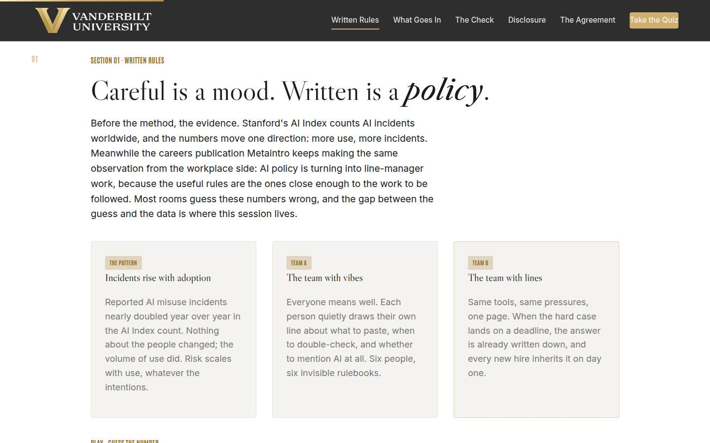
01 · Why written rules Full 8 min · Core 5
Establish with guessed-at, missed numbers that incidents rise with adoption, shadow use is the norm, policy lags everywhere, and late discovery is the expensive kind, which makes a written team agreement the cheap countermeasure.
Say
“Before the method, the evidence, and I want you to guess. Stanford's AI Index tracks AI incidents worldwide, and the misuse cases it counts nearly doubled year over year, climbing right alongside adoption. Meanwhile roughly half of the people using AI at work are doing it without their manager knowing, and most organizations still have no written policy their staff could actually find. Hold those three facts together: the risk is growing, the use is invisible, and the rules are missing. Every team in this room controls exactly one of those three. Four findings, call your number before each reveal.”
Do
- Frame the game: four findings, guess each before the reveal. Missed guesses are the point; they stick.
- Run Guess the Number on devices, or as a room vote on the projector; call for guesses out loud before each reveal.
- After the reveal round, walk the two-teams cards: same tools, same people, one page of difference.
- Run the quick check (what changes when rules are written), then the pair inventory: where does AI already touch your team, and is the rule written or vibes?
- Count the written-versus-vibes hands out loud and connect the count to the incident curve.
Ask
“Where does AI already show up on your team, and be honest: is any of it covered by a rule a new hire could find, or is it all vibes?”
Expect:
- Nearly all vibes: drafting, summarizing, quiet uses nobody reviews
- One or two teams with a real written line, usually after a scare
- Someone admits they don't actually know what their team uses
Respond: For the 'don't know' answer, warmly: 'That answer is the most useful one in the room; the team conversation on your capstone card is where you find out.' For the vibes majority: 'Vibes means the adoption already happened. The lines are the part that's missing, and lines are cheap.'
Debrief: Use is up, incidents are up, policy is behind, and the one page your team controls is the cheapest fix on the board. That page has four lines, and the rest of today writes them.
Validate: Quick check correct; the vibes count lands visibly and the room sees its own exposure.
Watch for: A methodology skeptic litigating incident counting. Don't defend a single number; the case is the convergence: rising incidents, universal quiet use, lagging policy. Park deep methodology questions and point at the Index link for later.
Transition: “One sentence before line one. It explains most of the incidents in that count.”
Core path: Core: Guess the Number as a fast room vote, quick check stays, the pair inventory becomes one show of hands with no discussion.
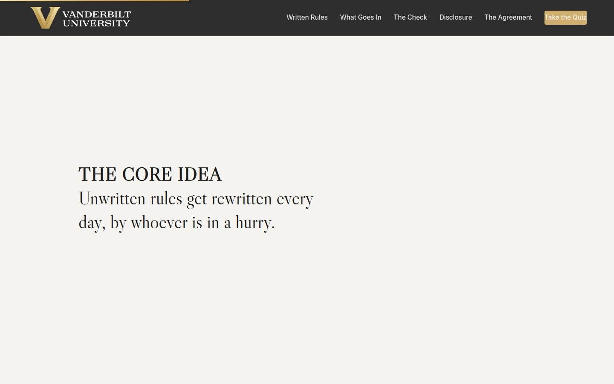
Manifesto Full 1 min · Core skip
One beat of stillness to lock the session's core idea before the method arrives.
Say
“Unwritten rules get rewritten every day, by whoever is in a hurry.”
Do
- Let the line animate word by word. Say nothing until it finishes.
- Read it once, slowly, then advance.
Validate: None; this is pacing.
Watch for: The urge to talk over it. Don't.
Transition: “So we write them down, starting with the one every other rule depends on: what goes in.”
Core path: Core: skip; say the line yourself as you pass it.
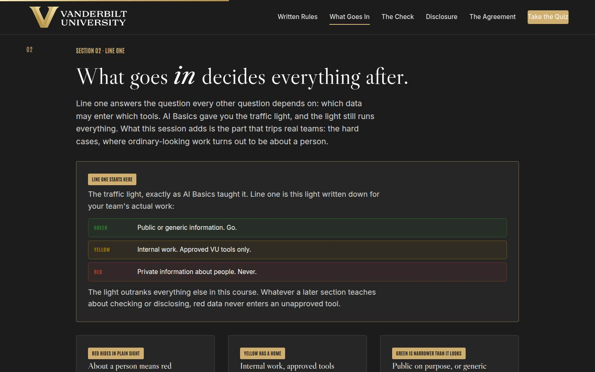
02 · Line one: what goes in Full 12 min · Core 9
Restate the traffic light exactly as Start Smarter taught it, then install the hard cases: about a person means red, internal means yellow in approved tools, and de-identification is what moves data between lights.
Say
“Line one answers the question every other question depends on: which data may enter which tools. You know the traffic light from Start Smarter: green is public or generic, go. Yellow is internal work, approved VU tools only, and today that list reads ChatGPT EDU, Amplify, and Copilot. Red is private information about people, never, and no deadline changes it. What today adds is the hard cases, because red hides in plain sight. A student's essay is about a student. Meeting notes naming colleagues are about colleagues, until the names come out. A recommendation letter is about its subject. The sorting question is 'who is this about,' asked before 'how sensitive does it feel.' And when a case genuinely will not classify, treat it as red for today and ask; improvising under deadline is how the incident count grows.”
Do
- Walk the traffic light card verbatim and point at the room's poster: green public or generic, yellow internal in approved VU tools, red private information about people, never.
- Walk the three hard-case cards: red hides in plain sight, yellow has a home, green is narrower than it looks.
- Name the approved tools out loud: ChatGPT EDU, Amplify, Copilot, and say why approval matters: their agreements keep university work inside university walls.
- Send them to Green, yellow, or red: five hard cases on devices.
- Run the quick check on de-identification, then the pair drill: classify your team's two most-handled data types and bring the hardest call to the room.
- Let the room argue one hard call briefly; settle it with the tell: who is this about?
Ask
“From the pair drill: what was your hardest call, and what made it hard?”
Expect:
- Meeting recordings and transcripts: work product tangled up with names
- Student-adjacent data that feels routine: rosters, advising emails, grade spreadsheets
- Something aggregated or anonymized, where the person-question gets genuinely subtle
Respond: Name the pattern: 'Notice the hard calls are almost never about sensitivity; they're about entanglement, people data braided into ordinary work. The fix is almost always the same: take the people out first, and the rest of the work turns yellow. When even that is unclear, that case goes on your page with a named person to ask.'
Debrief: The light, plus the hard cases, plus a route for the unclear ones: that is line one, and you just drafted its raw material from your own team's data.
Validate: 4+ of 5 on the trainer for most of the room; every learner has classified their own team's data types; the room can state the light unprompted and name the approved tools.
Watch for: Two drifts: 'it's fine because the tool promises privacy' (a prompt is a request; the agreement and the light decide, not the promise), and red-light violations wearing efficiency clothes ('AI could draft all my advisee emails!'). Correct both immediately and kindly; the light correction matters more than the flow of the room.
Transition: “Line one decides what goes in. Line two decides what happens before anything comes out.”
Core path: Core: light and hard-case cards at full strength, trainer on devices; the pair classification becomes a solo pass with the hardest call written down for the team meeting.
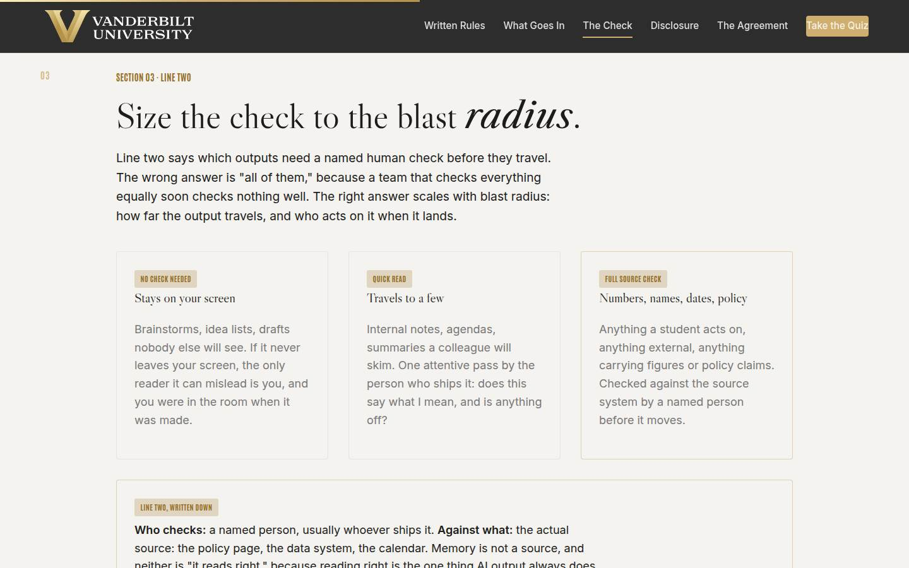
03 · Line two: the check Full 11 min · Core 8
Install verification sized to blast radius: no check for what stays private, a quick read for what travels to a few, a named full source check for numbers, names, dates, policy, and anything acted on.
Say
“Line two says which outputs need a named human check before they travel, and the wrong answer is all of them. A team that checks everything equally soon checks nothing well. So we size the check to the blast radius: how far does the output travel, and who acts on it when it lands? Stays on your screen: no check; the only reader it can mislead is you. Travels to a few colleagues: one attentive read by whoever ships it. But numbers, names, dates, policy claims, anything a student acts on or anything leaving the university: full source check, against the actual policy page or data system, never against memory, and never against whether it reads right, because reading right is the one thing AI output always does. And the check has a name attached, because a check assigned to 'someone' dies on the first busy Friday.”
Do
- Land the counterintuitive opener: 'check everything' is the wrong answer, because a team that checks everything equally soon checks nothing well.
- Walk the three tiers: no check, quick read, full source check, with blast radius as the sorting question.
- Walk the gold rubric card: who checks, against what, before it goes where. Stress that memory is not a source and 'reads right' is what AI output always does.
- Send them to Size the Check: five outputs on devices.
- Run the quick check, then the pair drill: size the checks for your team's three most-shipped outputs and name the checker for the biggest one.
Ask
“From the sizing drill: which of your team's outputs got the full source check, and who is the named checker?”
Expect:
- Student-facing answers and anything with deadlines or requirements
- Numbers that travel upward: dashboards, briefing slides, reports
- An honest 'we ship that one unchecked today,' usually about a newsletter or FAQ
Respond: Treat the honest answer as the win: 'That sentence, that output plus a name plus a source, is line two of your agreement, and you just wrote it. The gap you found is the reason the page exists.'
Debrief: Who checks, against what, before it goes where, sized to blast radius: line two. Cheap where stakes are low, rigorous where someone acts on the answer.
Validate: 4+ of 5 on the trainer; pair drills produce named checkers and named sources; the room can say why over-checking is a real failure mode.
Watch for: The over-correction: learners concluding every AI output needs heavyweight review. Keep the budget idea alive: verification spends attention, attention is scarce, and wasting it on brainstorms is how student-facing checks get starved.
Transition: “Line three is the awkward one: when do we tell people AI helped? One question settles it.”
Core path: Core: tiers and rubric at full strength, trainer on devices; the pair drill becomes a solo sizing of your own three outputs.
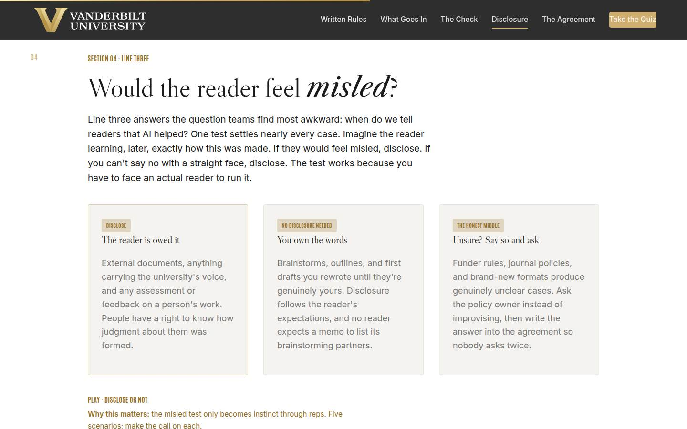
04 · Line three: disclosure Full 10 min · Core 6
Install the misled test as the dependable disclosure rule, with the three zones: disclose (external, university's voice, judgments of people), no disclosure (owned drafts and brainstorms), and the honest middle (say so and ask).
Say
“Line three answers the question teams find most awkward: when do we tell readers AI helped? One test settles nearly every case. Imagine the reader finding out, later, exactly how this was made. If they'd feel misled, disclose. If you can't say no with a straight face, disclose. External documents, anything in the university's voice, and any feedback or assessment on a person's work: those readers are owed it, and the assessment case is the strictest, because people have a right to know how judgment about them was formed. Brainstorms and drafts you rewrote until they're yours: nothing owed; no reader expects a memo to list its brainstorming partners. And the honest middle: when a funder's or journal's rules are unclear, say so and ask the policy owner, then write the answer into your page so nobody asks twice. Disclosure itself is one plain sentence, and it costs nothing. Discovered concealment costs everything your office ships next.”
Do
- Open with the test itself: imagine the reader learning exactly how this was made. Misled means disclose.
- Walk the three cards: the reader is owed it, you own the words, and unsure means say so and ask.
- Name the strictest case plainly: when AI helps evaluate a person's work, the person is owed that fact.
- Send them to Disclose or Not: five scenarios on devices, including the genuinely unclear funder case.
- Run the quick check, then the pair drill: run the test on one real output, draft the one-line disclosure, and read a few to the room for the honest-or-evasive vote.
Ask
“From the drill: read us your one-line disclosure. Room, call it: honest or evasive?”
Expect:
- Plain winners: 'Drafted with AI assistance; reviewed by the advising team'
- Evasive contenders: buried, hedged, or lawyer-flavored versions
- Someone asks whether the line makes them look lazy
Respond: For the lazy worry, give the reframe from the bank: readers punish discovered concealment far harder than disclosed assistance, and a plain process line reads like a photo credit. If a piece would embarrass you when disclosed, it needs more human work, which is a line-two problem, never a reason to hide the process.
Debrief: One test, three zones, one plain sentence. Line three is the cheapest trust insurance your team can buy.
Validate: 4+ of 5 on the trainer; drafted disclosure lines are one plain sentence; the room can say the test from memory and knows the unclear-case route.
Watch for: The percentage trap: learners wanting a rule like 'disclose over 50 percent AI.' Redirect to the reader every time: a fully AI-drafted brainstorm owes nobody anything, and a lightly edited assessment may still owe its subject the truth. The test beats any threshold.
Transition: “Last line, shortest line, and it carries the other three: who owns the output.”
Core path: Core: test and cards at full strength, trainer on devices, quick check stays; the read-aloud shrinks to one line judged by the room.
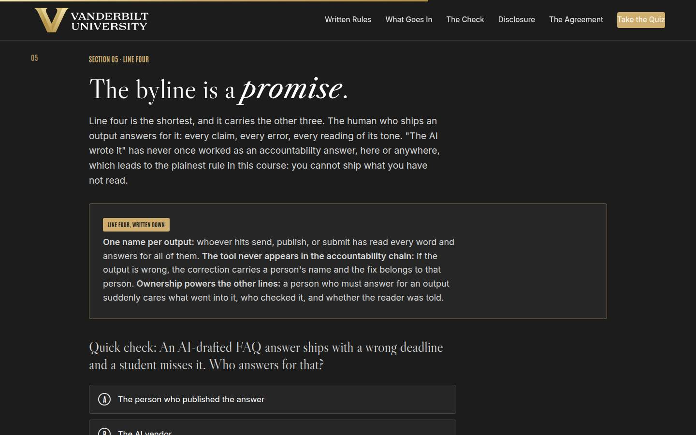
05 · Line four: ownership + the Lab Full 14 min · Core 10
Install output ownership (one name, every word read, the tool never in the accountability chain), then give every learner a full felt rep of all four lines in the Guardrails Lab, where design quality decides month one. The session's deepest practice block.
Say
“Line four is the shortest and it carries the rest: the human who ships an output answers for it. Every claim, every error, every reading of its tone. 'The AI wrote it' has never once worked as an accountability answer, anywhere, which gives you the plainest rule of the day: you cannot ship what you have not read. The byline is a promise. And notice what this line does to the other three: a person who must answer for an output suddenly cares what went into it, who checked it, and whether the reader was told. Now you get to feel all four lines at once. Your team is rolling out AI on the weekly newsletter and a student-facing FAQ. Write the four lines for that rollout, run month one, and watch where the design, not the tool, decides the outcome.”
Do
- Land line four in one breath: the human who ships it answers for it, and 'the AI wrote it' has never once worked.
- Walk the gold card: one name per output, tool never in the chain, ownership powers the other lines.
- Run the quick check (the wrong-deadline FAQ) and let its answer sting a little.
- Set the lab scenario in one breath: newsletter plus student-facing FAQ, write the four lines, run month one.
- Let people get their month-one outcome individually; the mid and weak tiers teach more than the strong one, so don't coach choices in advance.
- Ask for a show of hands by tier; have one weak-tier learner read their coach notes aloud. The room learns from the postmortem.
- Push the rerun: rewrite your weakest line and run the month again. The delta between runs is the lesson.
- Then the pair drill: walk one of your OWN outputs down all four lines and find the line running on vibes.
Ask
“For those who hit the mid or weak tier: which single line cost you the month, and does your real team run the same version of it today?”
Expect:
- The unwritten data rule: 'be careful' as line one
- The unnamed check: someone skims when there is time
- An honest 'my real team runs the weak version of all four'
Respond: Treat that last answer as the room's win: 'That recognition is the whole lab. The weak tier isn't hypothetical; it's a description of unmanaged AI use, which is what most teams run today. You now know the fixes, and they're one page long.'
Debrief: The lab's scoring is the session's thesis in miniature: outcomes follow the lines, not the tool. And your real team's weakest line now has a name, which makes the next section personal.
Validate: Every learner completes at least one lab run; most reach the strong tier on a rerun; every learner can name which of the four lines their real team currently leaves to chance.
Watch for: Learners who game the lab by picking the obviously maximal option everywhere without reading the coaching. The question that re-engages them: 'which of these lines would your actual team push back on, and why?' Also watch clock discipline; this section has the least slack.
Transition: “So let's write yours. For real, for your team, right now.”
Core path: Core: one lab run instead of run-plus-rerun (rerun only for learners who hit weak tier), tier hands stay, the pair drill becomes a solo vibes-line hunt. This is the floor; never cut the lab entirely.
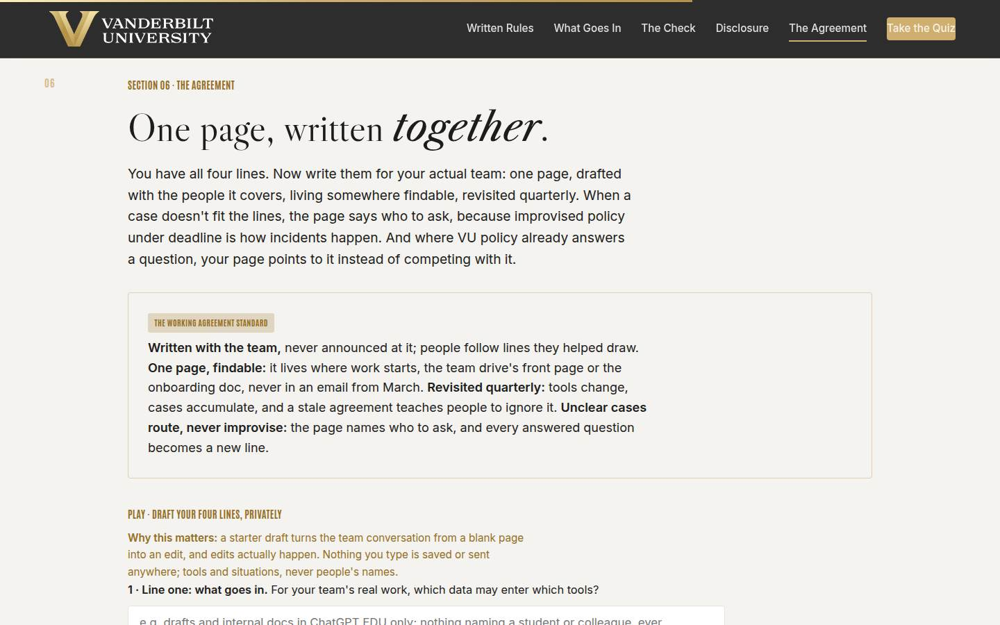
06 · Write your Four Lines Full 12 min · Core 8
Convert the method into a private starter draft: the learner writes lines one and two in their own words, picks a disclosure default, and receives a playback with line four pre-written, ready to bring to the team as an edit.
Say
“You have all four lines. Now write them for your actual team. The standard is short: written with the team, never announced at it, because people follow lines they helped draw. One page, living somewhere findable, the drive's front page or the onboarding doc, never in an email from March. Revisited quarterly, because tools change and stale agreements teach people to ignore them. And unclear cases route to a named person, never to a guess. Where the university already has the answer, your page points at it: FERPA to the registrar, tools to IT's list, funder rules to the research office. Your page covers what those documents can't reach: the everyday calls. Two fields and a default, in your own words, private to your screen. Line one: which data may enter which tools, for your team's real work. Line two: which outputs get a named check before they travel. Go.”
Do
- Walk the working agreement standard first: written with the team, one findable page, revisited quarterly, unclear cases routed.
- Name where VU policy already answers: FERPA to the registrar's guidance, tools to IT's list, funder rules to the research office. The page points, never competes.
- Repeat the privacy line, then give quiet time for the builder; line one deserves a full minute of thought.
- Circulate for stuck learners: the raw material is the drills they already did, their data types from 02 and their outputs from 03.
- Run the pair stress-test from Go deeper: swap lines, hit each other's line one with a real hard case, tighten the wording.
- Close the section by naming what they now hold: a starter draft the team meeting turns into an agreement.
Ask
“From the stress-test: did your line one survive your partner's hard case, and what did you change?”
Expect:
- Wording tightened from vague to concrete: 'sensitive stuff' became named data types
- A discovered gap: the line covered documents but not recordings or transcripts
- A line that survived intact, usually because it leaned on the light directly
Respond: Name the pattern: 'Notice every fix moved the line from adjectives to nouns. Careful, sensitive, appropriate: those are vibes. Named data types, named tools, named checkers: those are lines. Bring the nouns to your team meeting.'
Debrief: A starter draft in your own words, stress-tested once, with line four pre-written because it never changes. The team meeting turns this from your page into their page.
Validate: Every learner builds a draft (both lines plus a default); stress-tested lines survive a partner's hard case; learners can say where their page will live.
Watch for: Perfectionism stalling the draft ('it needs to cover everything'). The standard is a starter for the team to edit, not a finished policy; a two-sentence line one that answers the team's real cases beats a paragraph that covers hypotheticals. Also watch for policy-writing voice; push for words the team actually says.
Transition: “Quiz first, then the card that puts a date on that meeting.”
Core path: Core: standard and routes in ninety seconds, builder stays at full length with its quiet minute protected; the pair stress-test drops to an optional 90 seconds.
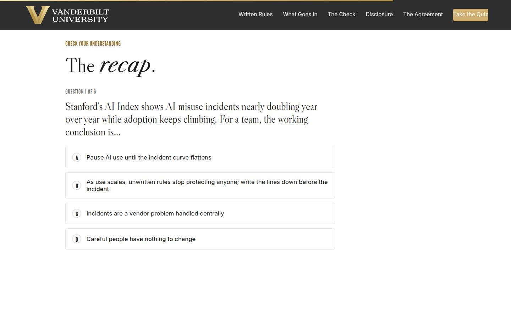
Recap quiz Full 4 min · Core 4
Score the session's knowledge against the five objectives before the capstone applies it (Kirkpatrick Level 2).
Say
“Six questions, one per big idea. This is the systems check before you write the card that leaves the room with you.”
Do
- Everyone takes it on their own device, all six questions.
- Ask for hands on 5-or-better; celebrate briefly.
- For any question the room visibly missed, do a 30-second reteach from the relevant slide, not a lecture.
Validate: Room mode at 5/6 or better. The quiz maps onto the objectives, so misses tell you exactly what to reteach.
Watch for: Racing. Frame it as the systems check before the card, not a race.
Transition: “Now the only part of today that changes anything.”
Core path: Core: keep at full length; this is the objectives' evidence.
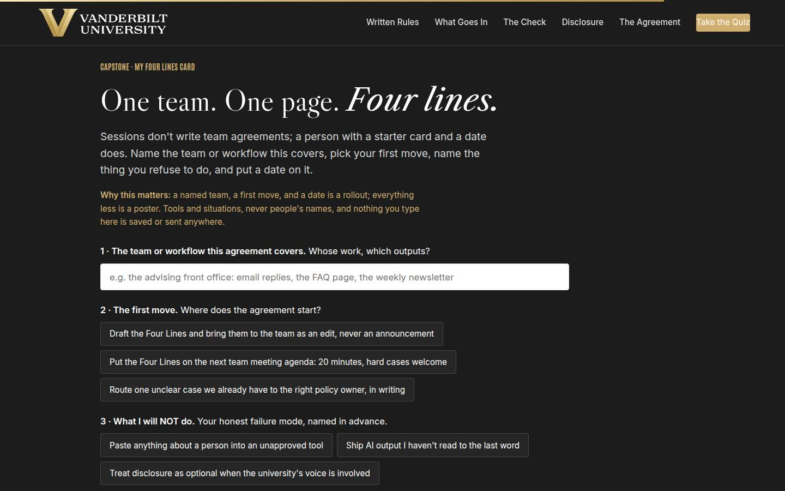
Capstone · My Four Lines card Full 6 min · Core 6
Convert the session into one dated commitment: a named team, a first move, a named failure mode to refuse, and a date, plus the agreement's home. The transfer artifact and the Level 3 seed.
Say
“Sessions don't write team agreements. A person with a card and a date does. Name the team and the work the page covers. Pick your first move: draft tonight and hand the team the pen, put it on the next team meeting agenda, or settle one unclear case with the right policy owner first. Then the honest field: what you will NOT do, because you know your failure mode: pasting people data into unapproved tools, shipping output you haven't read, or going quiet when the university's voice is involved. And the date. A named team with a first move and a date is a rollout. Everything less is a poster.”
Do
- Frame it: sessions don't write team agreements; a person with a starter card and a date does.
- Repeat the privacy norm before anyone types: tools and situations, nothing saved or sent.
- Give quiet time; this is individual work. Circulate for stuck learners: the builder draft from section 06 is the raw material.
- Point at field 3, what you will NOT do, as the honest one: every person in the room has one of these three failure modes.
- Push the build moment, then read the home row aloud: an agreement nobody can find governs nobody.
Ask
“What's most likely to make you skip the team conversation, and what's your plan for that obstacle?”
Expect:
- No time; the week will eat it
- Worry the team hears it as surveillance of their AI use
- Doubt that their team cares enough to engage
Respond: No time: 'It's 20 minutes against an incident that costs weeks; the math forgives you exactly once.' Surveillance: 'That's what draft-not-decree is for; hand them the pen and the quiet users will tell you where the real lines are.' Apathy: 'Open with the lab story: wrong deadline, public correction, frozen AI use. Teams care about the newsletter version of themselves.'
Debrief: One team is about to have the conversation, with a starter page in hand and a date on the calendar. That is how responsible use scales: one page at a time, written by the people it covers.
Validate: Every learner builds a card (all four fields). The card plus the 7-day pulse plus the 30-day re-poll is the evidence chain.
Watch for: Grand cards ('roll this out to the whole division'). Push to ONE team whose meetings they actually attend. And date-dodging: a conversation 'soon' is not a commitment; help them pick the actual day on the spot.
Transition: “Reference shelf in one breath, and then the send-off.”
Core path: Core: protect at full length; never cut the capstone.
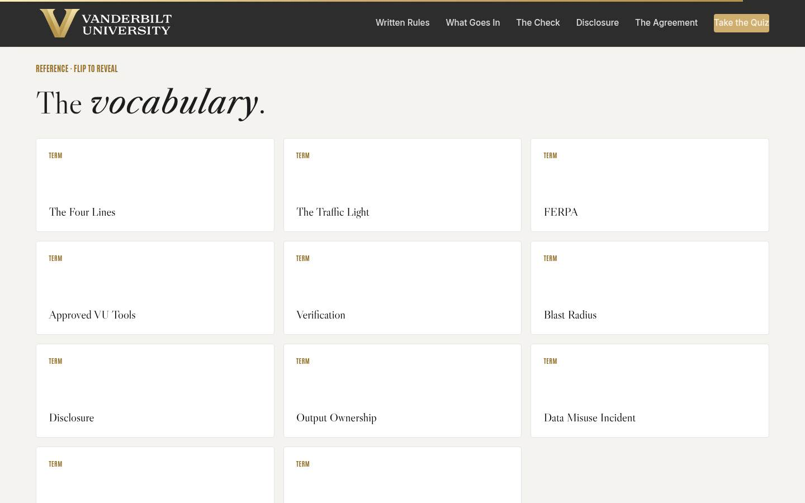
Glossary Full 1 min · Core skip
Signpost the reference layer; it lives here for after the session.
Say
“Every term from today lives here as flip cards, including Shadow AI, for the next time someone says their team doesn't really use this stuff.”
Do
- Flip one card on the projector (Shadow AI is a good pick; it gets a knowing laugh and reteaches section 01).
- Tell them it's all here whenever they need the vocabulary back.
Validate: None; reference material.
Watch for: Don't tour all eleven cards; one flip makes the point.
Transition: “Last slide. One conversation left.”
Core path: Core: skip; point at it verbally from the closing slide.
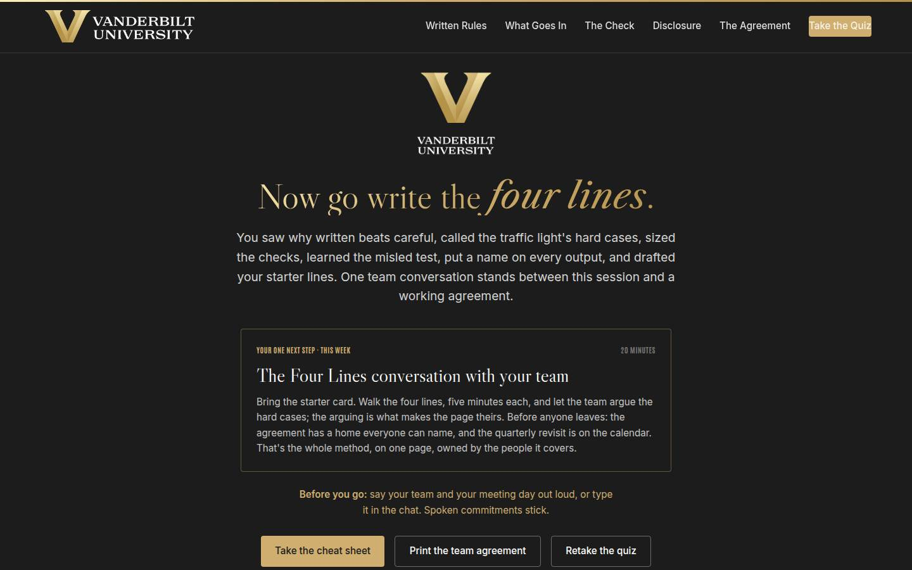
Closing · commitment Full 5 min · Core 1
Convert cards into spoken commitments, capture the Level 1 reaction check, and point at the follow-up chain.
Say
“The whole session in one breath: incidents rise with use, so the rules go in writing. What goes in follows the light. Checks are sized to blast radius and carry a name. Disclosure follows the misled test. And the human who ships it answers for it. You have a draft and a card. Before you go: your team, and your meeting day. Say it out loud; spoken commitments stick.”
Do
- Read the featured card: the one next step is the 20-minute Four Lines conversation with the team, this week, ending with a home and a revisit date.
- Run the fist-to-five (Level 1): 'On a fist to five, how confident are you making the daily calls now: what goes in, who checks, when to disclose?' Scan and note the number; the 30-day re-poll asks it again.
- Run the commitment round, popcorn style: team and meeting day, out loud or in chat.
- Point at the cheat sheet and agreement buttons; the worksheet is built to be filled in during the team conversation itself.
- Tell them the 7-day pulse is coming, then land the last line and stop on time.
Ask
“Around the room, one line each: your team, and your meeting day.”
Expect:
- 'The advising front office, Thursday'
- 'My unit's comms pair, we talk Monday'
- Someone commits to settling their unclear case with the registrar first
Respond: Thank each one, no commentary. For the case-settler, warmly: 'Good instinct. Bring the answer in writing to the team meeting; a settled argument is the best first line a page can have.'
Debrief: The session's success metric isn't in this room; it's the 7-day pulse: how many teams had the conversation, and where the pages live now.
Validate: Fist-to-five mostly 3+ (Level 1); a majority state a team and a day out loud or in chat. Count both; with the pulse and the 30-day re-poll, that's your evidence chain.
Watch for: Cards that quietly skipped the date. The commitment round catches them: no day, no commitment; help them pick one on the spot.
Transition: “Go book the conversation. And when the team's hard cases surprise you, and they will, that surprise is the sound of the agreement starting to work.”
Core path: Core: fist-to-five plus a fast commitment round; the ending survives every cut.
Generated from facilitator/notes.json. The on-screen facilitator edition lives at ./ alongside this guide.